Lecciones de circuitos eléctricos - Volumen II
Capítulo 12
CIRCUITOS DE MEDICIÓN DE CA
- AC voltmeters and ammeters
- Frequency and phase measurement
- Power measurement
- Power quality measurement
- AC bridge circuits
- AC instrumentation transducers
- Contributors
- Bibliography
AC voltmeters and ammeters
Los movimientos de medidores electromecánicos de CA vienen en dos disposiciones básicas: aquellos basados en diseños de movimiento de CC y aquellos diseñados específicamente para uso de CA. Los movimientos del medidor de bobina móvil de imán permanente (PMMC) no funcionarán correctamente si se conectan directamente a corriente alterna, porque la dirección del movimiento de la aguja cambiará con cada medio ciclo de la CA. (Cifra below) Los movimientos de los medidores de imanes permanentes, como los motores de imanes permanentes, son dispositivos cuyo movimiento depende de la polaridad del voltaje aplicado (o, puede pensar en ello en términos de la dirección de la corriente).
{kind=link}
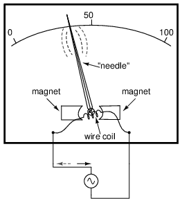
El paso de CA a través de este movimiento del medidor D'Arsonval provoca un aleteo inútil de la aguja.
Para utilizar un movimiento de medidor estilo CC como el diseño de D'Arsonval, la corriente alterna debe serrectificadoen CC. Esto se logra más fácilmente mediante el uso de dispositivos llamadosdiodos. Vimos diodos utilizados en un circuito de ejemplo que demuestra la creación de frecuencias armónicas a partir de una onda sinusoidal distorsionada (o rectificada). Sin entrar en detalles elaborados sobre cómo y por qué los diodos funcionan como lo hacen, solo recuerde que cada uno de ellos actúa como una válvula unidireccional para que fluyan los electrones: actúa como conductor para una polaridad y aislante para otra. Por extraño que parezca, la punta de flecha en cada símbolo de diodo apuntacontrala dirección permitida del flujo de electrones en lugar de seguirla como cabría esperar. Dispuestos en un puente, cuatro diodos servirán para dirigir la CA a través del movimiento del medidor en una dirección constante a lo largo de todas las partes del ciclo de CA: (Figura below)
{kind=link}
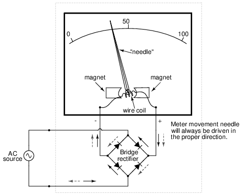
Pasar CA a través de este movimiento del medidor de CA rectificado lo impulsará en una dirección.
Otra estrategia para un movimiento práctico de medidor de CA es rediseñar el movimiento sin la sensibilidad de polaridad inherente de los tipos de CC. Esto significa evitar el uso de imanes permanentes. Probablemente el diseño más simple es utilizar una paleta de hierro no magnetizada para mover la aguja contra la tensión del resorte, siendo atraída la paleta hacia una bobina estacionaria de alambre energizada por la cantidad de CA que se va a medir, como se muestra en la Figura below.
{kind=link}
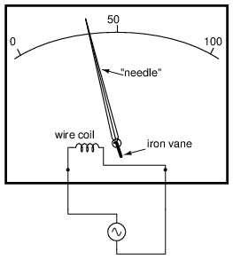
Movimiento del contador electromecánico de paletas de hierro.
La atracción electrostática entre dos placas metálicas separadas por un espacio de aire es un mecanismo alternativo para generar una fuerza de movimiento de la aguja proporcional al voltaje aplicado. Esto funciona tan bien para CA como para CC, o debería decir, ¡igual de mal! Las fuerzas involucradas son muy pequeñas, mucho más pequeñas que la atracción magnética entre una bobina energizada y una paleta de hierro y, como tales, estos movimientos "electrostáticos" del medidor tienden a ser frágiles y fácilmente perturbados por el movimiento físico. Pero, para algunas aplicaciones de CA de alto voltaje, el movimiento electrostático es una tecnología elegante. Al menos, esta tecnología posee la ventaja de una impedancia de entrada extremadamente alta, lo que significa que no es necesario extraer corriente del circuito bajo prueba. Además, los movimientos electrostáticos del medidor son capaces de medir voltajes muy altos sin necesidad de resistencias de rango u otros aparatos externos.
Cuando es necesario reajustar el movimiento de un medidor sensible para que funcione como un voltímetro de CA, se pueden emplear resistencias “multiplicadoras” conectadas en serie y/o divisores de voltaje resistivo tal como en el diseño del medidor de CC: (Figura below)
{kind=link}
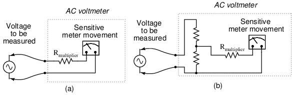
La resistencia multiplicadora (a) o el divisor resistivo (b) escalan el rango del movimiento básico del medidor.
Sin embargo, se pueden utilizar condensadores en lugar de resistencias para crear circuitos divisores de voltímetro. Esta estrategia tiene la ventaja de no ser disipativa (no se consume energía real ni se produce calor): (Figura below)
{kind=link}
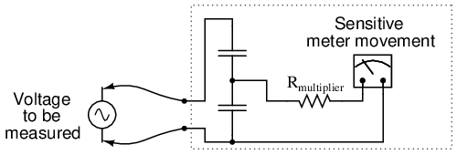
Voltímetro CA con divisor capacitivo.
Si el movimiento del medidor es electrostático y, por lo tanto, de naturaleza inherentemente capacitiva, se puede conectar un solo capacitor “multiplicador” en serie para darle un rango de medición de voltaje mayor, de la misma manera que una resistencia multiplicadora conectada en serie le da al movimiento del medidor de bobina móvil (intrínsecamente resistivo) un rango de voltaje mayor: (Figura below)
{kind=link}
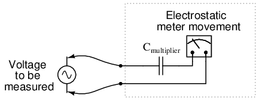
El movimiento de un medidor electrostático puede utilizar un multiplicador capacitivo para multiplicar la escala del movimiento básico del medidor.
El tubo de rayos catódicos (CRT) mencionado en el capítulo sobre medición de CC es ideal para medir voltajes de CA, especialmente si el haz de electrones se desplaza de lado a lado a través de la pantalla del tubo mientras el voltaje de CA medido impulsa el haz hacia arriba y hacia abajo. Con un dispositivo de este tipo se puede obtener fácilmente una representación gráfica de la forma de onda de CA y no sólo una medición de la magnitud. Sin embargo, los CRT tienen las desventajas de peso, tamaño, consumo de energía significativo y fragilidad (al estar hechos de vidrio evacuado) que juegan en su contra. Por estas razones, los movimientos electromecánicos de los contadores de CA todavía tienen cabida en el uso práctico.
Habiendo ya analizado algunas de las ventajas y desventajas de estas tecnologías de movimiento de medidores, existe otro factor de crucial importancia que el diseñador y usuario de instrumentos de medición de CA debe tener en cuenta. Ésta es la cuestión de la medición RMS. Como ya sabemos, las mediciones de CA a menudo se realizan en una escala de equivalencia de potencia de CC, llamadaRMS (Root-Mean-Square) en aras de comparaciones significativas con CC y con otras formas de onda de CA de forma variable. Ninguna de las tecnologías de movimiento de medidores analizadas hasta ahora mide inherentemente el valor RMS de una cantidad de CA. Los movimientos del medidor que dependen del movimiento de una aguja mecánica (“rectificada” D'Arsonval, de paleta de hierro y electrostática) tienden a promediar mecánicamente los valores instantáneos en un valor promedio general para la forma de onda. Este valor medio no necesariamente es igual al RMS, aunque muchas veces se confunde con tal. Los valores promedio y RMS se comparan entre sí como tales para estas tres formas de onda comunes: (Figura below)
{kind=link}
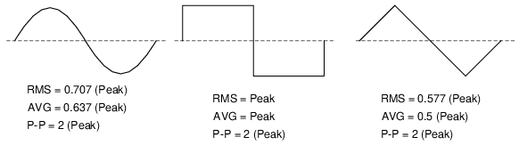
Valores RMS, promedio y pico a pico para ondas sinusoidales, cuadradas y triangulares.
Dado que RMS parece ser el tipo de medición que la mayoría de la gente está interesada en obtener con un instrumento, y los movimientos electromecánicos del medidor proporcionan naturalmentepromediomediciones en lugar de RMS, ¿qué deben hacer los diseñadores de medidores de CA? ¡Haz trampa, por supuesto! Normalmente se supone que la forma de onda que se va a medir será sinusoidal (con mucho, la más común, especialmente para sistemas de energía), y luego la escala de movimiento del medidor se modifica mediante el factor de multiplicación apropiado. Para las ondas sinusoidales vemos que RMS es igual a 0,707 veces el valor pico, mientras que el promedio es 0,637 veces el pico, por lo que podemos dividir una cifra por la otra para obtener un factor de conversión de promedio a RMS de 1,109:
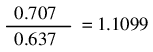
En otras palabras, el movimiento del medidor se calibrará para indicar aproximadamente 1,11 veces más de lo que indicaría normalmente (naturalmente) sin adaptaciones especiales. Hay que destacar que este “truco” sólo funciona bien cuando el medidor se utiliza para medir fuentes de onda sinusoidal pura. Tenga en cuenta que para las ondas triangulares, la relación entre RMS y Promedio no es la misma que para las ondas sinusoidales:
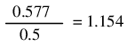
¡Con ondas cuadradas, los valores RMS y promedio son idénticos! Un medidor de CA calibrado para leer con precisión el voltaje o la corriente RMS en una onda sinusoidal puranotproporcione el valor adecuado indicando al mismo tiempo la magnitud de cualquier otra cosa que no sea una onda sinusoidal perfecta. Esto incluye ondas triangulares, ondas cuadradas o cualquier tipo de onda sinusoidal distorsionada. Dado que los armónicos se están convirtiendo en un fenómeno siempre presente en los grandes sistemas de energía de CA, esta cuestión de la medición RMS precisa no es un asunto menor.
El lector astuto notará que he omitido el “movimiento” CRT de la discusión RMS/Promedio. Esto se debe a que un CRT con su “movimiento” de haz de electrones prácticamente ingrávido muestra el pico (o pico a pico si lo desea) de una forma de onda de CA en lugar del promedio o RMS. Aún así, surge un problema similar: ¿cómo se determina el valor RMS de una forma de onda a partir de ella? Los factores de conversión entre Pico y RMS solo se mantienen siempre que la forma de onda caiga claramente en una categoría de forma conocida (seno, triángulo y cuadrado son los únicos ejemplos con factores de conversión Pico/RMS/Promedio que se dan aquí).
Una respuesta es diseñar el movimiento del medidor en torno a la definición misma de RMS: el valor de calentamiento efectivo de un voltaje/corriente de CA cuando alimenta una carga resistiva. Supongamos que la fuente de CA que se va a medir está conectada a través de una resistencia de valor conocido y que la producción de calor de esa resistencia se mide con un dispositivo como un termopar. Esto proporcionaría un medio de medición de RMS mucho más directo que cualquier factor de conversión, ya que funcionará con CUALQUIER forma de onda: (Figura below)
{kind=link}
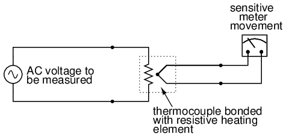
El voltímetro térmico RMS de lectura directa se adapta a cualquier forma de onda.
Si bien el dispositivo que se muestra arriba es algo tosco y sufriría sus propios problemas de ingeniería únicos, el concepto ilustrado es muy sólido. La resistencia convierte el voltaje de CA o la cantidad de corriente en una cantidad térmica (calor), elevando efectivamente al cuadrado los valores en tiempo real. La masa del sistema funciona para promediar estos valores mediante el principio de inercia térmica, y luego la escala del medidor se calibra para dar una indicación basada en la raíz cuadrada de la medición térmica: ¡indicación perfecta de raíz cuadrática media, todo en un solo dispositivo! De hecho, un importante fabricante de instrumentos ha implementado esta técnica en su línea de multímetros electrónicos portátiles de alta gama para lograr capacidad de "verdadero valor eficaz".
La calibración de voltímetros y amperímetros de CA para diferentes rangos de operación a escala completa es muy similar a la de los instrumentos de CC: se usan resistencias "multiplicadoras" en serie para dar a los movimientos del voltímetro un mayor rango, y se usan resistencias "en derivación" en paralelo para permitir que los movimientos del amperímetro midan corrientes más allá de su rango natural. Sin embargo, no estamos limitados a estas técnicas como lo estábamos con la CC: debido a que podemos usar transformadores con CA, los rangos de los medidores pueden “aumentarse” o “reducirse” electromagnéticamente en lugar de resistivamente, a veces mucho más allá de lo que las resistencias habrían permitido en la práctica. Los transformadores de potencial (PT) y los transformadores de corriente (CT) son dispositivos de instrumentos de precisión fabricados para producir relaciones de transformación muy precisas entre los devanados primarios y secundarios. Pueden permitir movimientos pequeños y simples del medidor de CA para indicar voltajes y corrientes extremadamente altas en sistemas de energía con precisión y aislamiento eléctrico completo (algo que los multiplicadores y las resistencias en derivación nunca podrían hacer): (Figura below)
{kind=link}
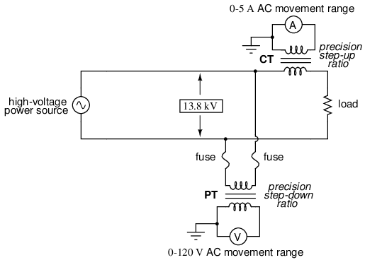
(CT) El transformador de corriente reduce la corriente. (PT) El transformador de potencial reduce el voltaje.
Aquí se muestra un panel medidor de voltaje y corriente de un sistema de CA trifásico. Los tres transformadores de corriente (CT) en forma de “rosquilla” se pueden ver en la parte posterior del panel. Tres amperímetros de CA (con una deflexión de escala completa de 5 amperios cada uno) en el frente del panel indican la corriente a través de cada conductor que pasa por un CT. Como este panel ha sido retirado de servicio, ya no hay conductores portadores de corriente conectados a través del centro de los “donuts” del CT: (Figura below)
{kind=link}
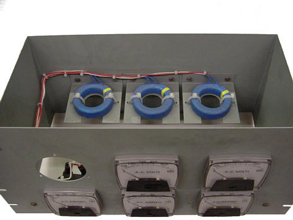
Los transformadores de corriente toroidales reducen los altos niveles de corriente para su aplicación a amperímetros de CA de escala completa de 5 A.
Debido al costo (y a menudo al gran tamaño) de los transformadores de instrumentos, no se utilizan para escalar medidores de CA para ninguna aplicación que no sea alta tensión y alta corriente. Para escalar un movimiento de miliamperios o microamperios a un rango de 120 voltios o 5 amperios, se utilizan resistencias de precisión normales (multiplicadores y derivaciones), al igual que con CC.
- REVISAR:
- Los movimientos del medidor polarizado (DC) deben utilizar dispositivos llamadosdiodospara poder indicar cantidades de CA.
- Los movimientos electromecánicos del medidor, ya sean electromagnéticos o electrostáticos, proporcionan naturalmente lapromediovalor de una cantidad de CA medida. Estos instrumentos pueden variar para indicar el valor RMS, ¡pero solo si la forma de la onda de CA se conoce con precisión de antemano!
- Así llamadovalores eficaces verdaderosLos medidores utilizan tecnología diferente para proporcionar indicaciones que representen el valor eficaz real (en lugar del promedio o pico sesgado) de una forma de onda de CA.
Frequency and phase measurement
Una cantidad eléctrica importante sin equivalente en los circuitos de CC esfrecuencia. La medición de frecuencia es muy importante en muchas aplicaciones de corriente alterna, especialmente en sistemas de energía de CA diseñados para funcionar de manera eficiente en una frecuencia y solo en una frecuencia. Si la CA es generada por un alternador electromecánico, la frecuencia será directamente proporcional a la velocidad del eje de la máquina, y la frecuencia podría medirse simplemente midiendo la velocidad del eje. Sin embargo, si es necesario medir la frecuencia a cierta distancia del alternador, serán necesarios otros medios de medición.
Un método simple pero tosco de medición de frecuencia en sistemas de energía utiliza el principio de resonancia mecánica. Todo objeto físico que posee la propiedad de elasticidad (elasticidad) tiene una frecuencia inherente a la que preferirá vibrar. El diapasón es un gran ejemplo de esto: golpéelo una vez y seguirá vibrando en un tono específico para su longitud. Los diapasones más largos tienen frecuencias de resonancia más bajas: sus tonos serán más bajos en la escala musical que los diapasones más cortos.
Imagine una fila de diapasones de tamaño progresivo dispuestos uno al lado del otro. Todos están montados sobre una base común, y esa base vibra a la frecuencia del voltaje (o corriente) de CA medido por medio de un electroimán. Cualquier diapasón que tenga una frecuencia de resonancia más cercana a la frecuencia de esa vibración tenderá a temblar más (o más fuerte). Si las púas de las horquillas fueran lo suficientemente endebles, podríamos ver el movimiento relativo de cada una por la longitud del desenfoque que veríamos al inspeccionar cada una desde una perspectiva final. Bueno, haga una colección de “diapasones” con una tira de chapa metálica cortada en un patrón similar a un rastrillo, y tendrá lacaña vibrantemedidor de frecuencia: (Figura below)
{kind=link}
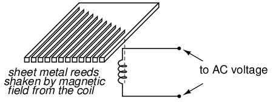
Diagrama del frecuencímetro de lámina vibratoria.
El usuario de este medidor ve los extremos de todas esas cañas de longitud desigual mientras se sacuden colectivamente a la frecuencia del voltaje de CA aplicado a la bobina. El más cercano en frecuencia resonante a la CA aplicada vibrará más, luciendo así como en la Figura below.
{kind=link}
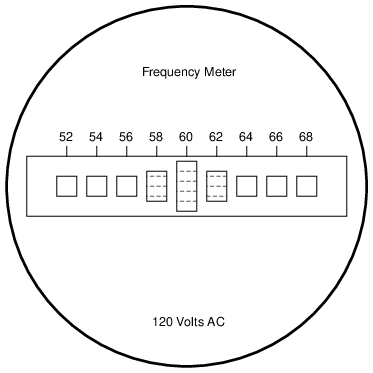
Panel frontal del frecuencímetro de lámina vibratoria.
Los medidores de láminas vibratorias, obviamente, no son instrumentos de precisión, pero son muy simples y, por lo tanto, fáciles de fabricar para que sean resistentes. A menudo se encuentran en pequeños grupos electrógenos impulsados por motores con el fin de ajustar la velocidad del motor de modo que la frecuencia sea algo cercana a 60 (50 en Europa) Hertz.
Si bien los medidores de láminas son imprecisos, su principio operativo no lo es. En lugar de resonancia mecánica, podemos sustituir la resonancia eléctrica y diseñar un frecuencímetro utilizando un inductor y un condensador en forma de circuito tanque (inductor y condensador en paralelo). Ver figura below. Uno o ambos componentes se hacen ajustables y se coloca un medidor en el circuito para indicar la amplitud máxima de voltaje entre los dos componentes. Las perillas de ajuste están calibradas para mostrar la frecuencia de resonancia para cualquier configuración determinada, y la frecuencia se lee en ellas después de que el dispositivo se ha ajustado para obtener la máxima indicación en el medidor. Esencialmente, se trata de un circuito de filtro sintonizable que se ajusta y luego se lee de manera similar a un circuito puente (que debe equilibrarse para una condición "nula" y luego leerse).
{kind=link}
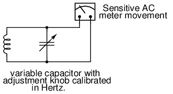
El medidor de frecuencia resonante alcanza su “pico” a medida que la frecuencia resonante LC se sintoniza con la frecuencia de prueba.
Esta técnica es popular entre los radioaficionados (o al menos lo era antes de la llegada de instrumentos de frecuencia digitales económicos llamadoscontadores), especialmente porque no requiere conexión directa al circuito. Siempre que el inductor y/o el condensador puedan interceptar suficiente campo perdido (magnético o eléctrico, respectivamente) del circuito bajo prueba para hacer que el medidor indique, funcionará.
En frecuencia, como en otros tipos de medición eléctrica, los medios de medición más precisos suelen ser aquellos en los que se compara una cantidad desconocida con una conocida.estándar, el instrumento básico no hace más que indicar cuándo las dos cantidades son iguales entre sí. Este es el principio básico detrás del circuito puente CC (Wheatstone) y es un principio metrológico sólido aplicado en todas las ciencias. Si tenemos acceso a un estándar de frecuencia preciso (una fuente de voltaje de CA que se mantiene con mucha precisión en una sola frecuencia), entonces la medición de cualquier frecuencia desconocida en comparación debería ser relativamente fácil.
Para ese estándar de frecuencia, volvemos nuestra atención al diapasón, o al menos a una variación más moderna del mismo llamadacristal de cuarzo. El cuarzo es un mineral natural que posee una propiedad muy interesante llamadapiezoelectricidad. Los materiales piezoeléctricos producen un voltaje a lo largo de su longitud cuando se les aplica tensión física y se deformarán físicamente cuando se aplica un voltaje externo a lo largo de su longitud. Esta deformación es muy, muy leve en la mayoría de los casos, pero existe.
La roca de cuarzo es elástica (elástica) dentro de ese pequeño rango de flexión que produciría un voltaje externo, lo que significa que tendrá una frecuencia de resonancia mecánica propia capaz de manifestarse como una señal de voltaje eléctrico. En otras palabras, si se golpea un chip de cuarzo, "sonará" con su propia frecuencia única determinada por la longitud del chip, y esa oscilación resonante producirá un voltaje equivalente en múltiples puntos del chip de cuarzo que se puede conectar mediante cables fijados a la superficie del chip. De manera recíproca, el chip de cuarzo tenderá a vibrar más cuando sea "excitado" por un voltaje de CA aplicado a la frecuencia correcta, exactamente como las lengüetas de un frecuencímetro de lengüeta vibratoria.
Los chips de roca de cuarzo se pueden cortar con precisión para obtener las frecuencias de resonancia deseadas y ese chip se puede montar de forma segura dentro de una carcasa protectora con cables que se extienden para conectarlos a un circuito eléctrico externo. Cuando se empaqueta como tal, el dispositivo resultante se llama simplementecristal(o a veces “xtal"). El símbolo esquemático se muestra en la Figura below.
{kind=link}
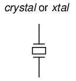
Símbolo esquemático de cristal (elemento determinante de frecuencia).
Eléctricamente, ese chip de cuarzo equivale a un circuito resonante LC en serie. (Cifra below) Las propiedades dieléctricas del cuarzo aportan un elemento capacitivo adicional al circuito equivalente.
{kind=link}
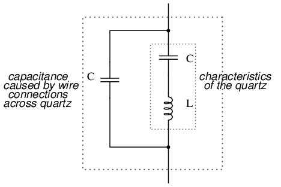
Circuito equivalente de cristal de cuarzo.
La “capacitancia” y la “inductancia” que se muestran en serie son simplemente equivalentes eléctricos de las propiedades de resonancia mecánica del cuarzo: no existen como componentes discretos dentro del cristal. La capacitancia que se muestra en paralelo debido a las conexiones de cables a través del cuerpo de cuarzo dieléctrico (aislante) es real y tiene un efecto en la respuesta resonante de todo el sistema. No es necesario aquí una discusión completa sobre la dinámica de los cristales, pero lo que hay que entender acerca de los cristales es esta equivalencia del circuito resonante y cómo se puede explotar dentro de un circuito oscilador para lograr un voltaje de salida con una frecuencia estable y conocida.
Los cristales, como elementos resonantes, suelen tener una "Q" mucho más alta (calidad) valores que los circuitos de tanque construidos a partir de inductores y condensadores, principalmente debido a la relativa ausencia de resistencia parásita, lo que hace que sus frecuencias de resonancia sean muy definidas y precisas. Debido a que la frecuencia de resonancia depende únicamente de las propiedades físicas del cuarzo (una sustancia muy estable mecánicamente), la variación de la frecuencia de resonancia a lo largo del tiempo con un cristal de cuarzo es muy, muy baja. Así es comomovimiento de cuarzoLos relojes obtienen su alta precisión: mediante un oscilador electrónico estabilizado por la acción resonante de un cristal de cuarzo.
Sin embargo, para aplicaciones de laboratorio, puede desearse una estabilidad de frecuencia aún mayor. Para lograr esto, el cristal en cuestión puede colocarse en un ambiente con temperatura estabilizada (generalmente un horno), eliminando así los errores de frecuencia debidos a la expansión y contracción térmica del cuarzo.
Sin embargo, en lo que respecta a lo último en estándares de frecuencia, nada descubierto hasta ahora supera la precisión de un solo átomo resonante. Este es el principio del llamadoreloj atómico, que utiliza un átomo de mercurio (o cesio) suspendido en el vacío, excitado por energía exterior para que resuene en su propia frecuencia única. La frecuencia resultante se detecta como una señal de ondas de radio y constituye la base de los relojes más precisos conocidos por la humanidad. Los laboratorios de estándares nacionales de todo el mundo mantienen algunos de estos relojes hiperprecisos y transmiten señales de frecuencia basadas en las vibraciones de esos átomos para que los científicos y técnicos las sintonicen y las utilicen con fines de calibración de frecuencia.
Ahora llegamos a la parte práctica: una vez que tenemos unafuentede frecuencia precisa, ¿cómo la comparamos con una frecuencia desconocida para obtener una medición? Una forma es utilizar un CRT como dispositivo de comparación de frecuencias. Los tubos de rayos catódicos suelen tener medios para desviar el haz de electrones tanto en el eje horizontal como en el vertical. Si se utilizan placas de metal para desviar electrostáticamente los electrones, habrá un par de placas a la izquierda y a la derecha del haz, así como un par de placas encima y debajo del haz, como en la Figura below.
{kind=link}
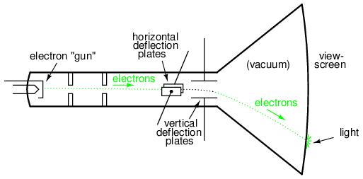
Tubo de rayos catódicos (CRT) con placas de desviación verticales y horizontales.
Si permitimos que una señal de CA desvíe el haz hacia arriba y hacia abajo (conecte esa fuente de voltaje de CA a las placas de desviación “verticales”) y otra señal de CA para desviar el haz hacia la izquierda y hacia la derecha (usando el otro par de placas de desviación), se producirán patrones en la pantalla del CRT indicativos delrelaciónde estas dos frecuencias de CA. Estos patrones se llamanfiguras de lissajousy son un medio común de medición de frecuencia comparativa en electrónica.
Si las dos frecuencias son iguales, obtendremos una figura simple en la pantalla del CRT, dependiendo la forma de esa figura del cambio de fase entre las dos señales de CA. Aquí hay una muestra de cifras de Lissajous para dos señales de onda sinusoidal de igual frecuencia, mostradas como aparecerían en un osciloscopio (un instrumento de medición de voltaje de CA que utiliza un CRT como “movimiento”). La primera imagen es de la figura de Lissajous formada por dos voltajes CA perfectamente en fase entre sí: (Figura below)
{kind=link}
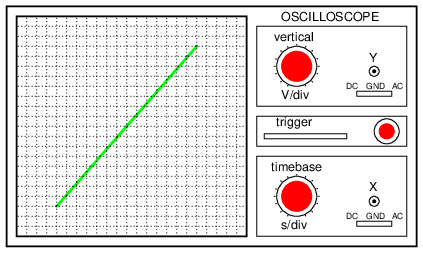
Figura de Lissajous: misma frecuencia, cambio de fase de cero grados.
Si los dos voltajes de CA no están en fase entre sí, no se formará una línea recta. Más bien, la figura de Lissajous adoptará la apariencia de un óvalo, volviéndose perfectamente circular si el cambio de fase es exactamente 90.oentre las dos señales, y si sus amplitudes son iguales: (Figura below)
{kind=link}
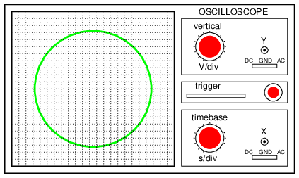
Figura de Lissajous: misma frecuencia, cambio de fase de 90 o 270 grados.
Finalmente, si las dos señales de CA están directamente opuestas en fase (180odesplazamiento), terminaremos con una línea nuevamente, solo que esta vez estará orientada en la dirección opuesta: (Figura below)
{kind=link}
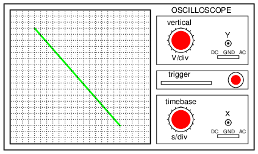
Figura de Lissajous: misma frecuencia, cambio de fase de 180 grados.
Cuando nos enfrentamos a frecuencias de señal que no son iguales, las figuras de Lissajous se vuelven un poco más complejas. Considere los siguientes ejemplos y sus relaciones de frecuencia vertical/horizontal dadas: (Figura below)
{kind=link}
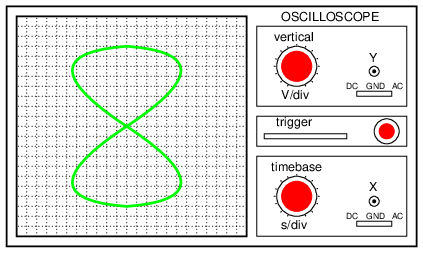
Figura de Lissajous: La frecuencia horizontal es el doble que la vertical.
Cuanto más compleja es la relación entre las frecuencias horizontales y verticales, más compleja es la figura de Lissajous. Considere la siguiente ilustración de una relación de frecuencia de 3:1 entre horizontal y vertical: (Figura below)
{kind=link}
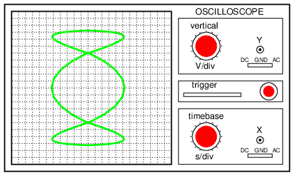
Figura de Lissajous: La frecuencia horizontal es tres veces mayor que la vertical.
. . . y una relación de frecuencia de 3:2 (horizontal = 3, vertical = 2) en la Figura below.
{kind=link}
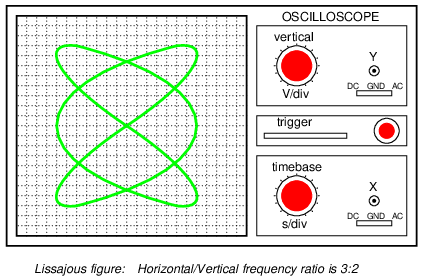
Figura de Lissajous: La relación de frecuencia horizontal/vertical es 3:2.
En los casos en los que las frecuencias de las dos señales de CA no son exactamente una relación simple entre sí (pero sí cercanas), la figura de Lissajous parecerá “moverse”, cambiando lentamente de orientación a medida que el ángulo de fase entre las dos formas de onda oscila entre 0 y 0.oy 180o. Si las dos frecuencias están bloqueadas en una proporción entera exacta entre sí, la figura de Lissajous será estable en la pantalla del CRT.
La física de las figuras de Lissajous limita su utilidad como técnica de comparación de frecuencias a los casos en los que las relaciones de frecuencia son valores enteros simples (1:1, 1:2, 1:3, 2:3, 3:4, etc.). A pesar de esta limitación, las cifras de Lissajous son un medio popular de comparación de frecuencias siempre que exista un estándar de frecuencia accesible (generador de señales).
- REVISAR:
- Algunos frecuencímetros funcionan según el principio de resonancia mecánica, indicando la frecuencia mediante oscilación relativa entre un conjunto de “cañas” afinadas de forma única que se agitan a la frecuencia medida.
- Otros frecuencímetros utilizan circuitos resonantes eléctricos (normalmente circuitos de tanque LC) para indicar la frecuencia. Uno o ambos componentes están hechos para ser ajustables, con una perilla de ajuste calibrada con precisión, y un medidor sensible lee el voltaje o corriente máximos en el punto de resonancia.
- La frecuencia se puede medir de forma comparativa, como es el caso cuando se utiliza un CRT para generarfiguras de lissajous. Las señales de frecuencia de referencia se pueden generar con un alto grado de precisión mediante circuitos osciladores que utilizan cristales de cuarzo como dispositivos resonantes. Para lograr ultraprecisión, se pueden utilizar estándares de señales de reloj atómico (basados en las frecuencias de resonancia de átomos individuales).
Power measurement
La medición de potencia en circuitos de CA puede ser un poco más compleja que en los circuitos de CC por la sencilla razón de que el cambio de fase complica el asunto más allá de multiplicar el voltaje por las cifras de corriente obtenidas con medidores. Lo que se necesita es un instrumento capaz de determinar el producto (multiplicación) deinstantáneotensión y corriente. Afortunadamente, el movimiento común del electrodinamómetro con su bobina estacionaria y móvil hace un excelente trabajo en este sentido.
La medición de potencia trifásica se puede lograr usando dos movimientos de dinamómetro con un eje común que une las dos bobinas móviles de modo que un solo puntero registre la potencia en una escala de movimiento del medidor. Esto, obviamente, genera un mecanismo de movimiento bastante caro y complejo, pero es una solución viable.
Un método ingenioso para obtener un medidor de potencia electrónico (uno que genere una señal eléctrica que represente la potencia en el sistema en lugar de simplemente mover un puntero) se basa en el efecto Hall. El efecto Hall es un efecto inusual observado por primera vez por E. H. Hall en 1879, mediante el cual se genera un voltaje a lo largo del ancho de un conductor portador de corriente expuesto a un campo magnético perpendicular: (Figura below)
{kind=link}
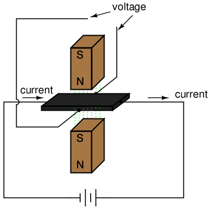
Efecto Hall: el voltaje es proporcional a la corriente y la fuerza del campo magnético perpendicular.
El voltaje generado a lo largo del ancho del conductor plano y rectangular es directamente proporcional tanto a la magnitud de la corriente que lo atraviesa como a la intensidad del campo magnético. Matemáticamente, es un producto (multiplicación) de estas dos variables. La cantidad de "voltaje Hall" producida para cualquier conjunto de condiciones también depende del tipo de material utilizado para el conductor plano y rectangular. Se ha descubierto que los materiales "semiconductores" especialmente preparados producen un voltaje Hall mayor que los metales, por lo que los modernos dispositivos de efecto Hall se fabrican con estos.
Tiene sentido entonces que si construyéramos un dispositivo usando un sensor de efecto Hall donde la corriente a través del conductor fuera impulsada por voltaje de CA de un circuito externo y el campo magnético fuera establecido por un par de bobinas de alambre energizadas por la corriente del circuito de alimentación de CA, el voltaje Hall sería directamente proporcional al múltiplo de la corriente y el voltaje del circuito. Al no tener masa que mover (a diferencia de un movimiento electromecánico), este dispositivo es capaz de proporcionarinstantáneomedición de potencia: (Figura below)
{kind=link}
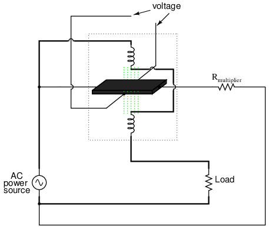
El sensor de potencia de efecto Hall mide la potencia instantánea.
¡El voltaje de salida del dispositivo de efecto Hall no solo será la representación de la potencia instantánea en cualquier momento, sino que también será una señal de CC! Esto se debe a que la polaridad del voltaje Hall depende deambosla polaridad del campo magnético y la dirección de la corriente a través del conductor. Si tanto la dirección de la corriente como la polaridad del campo magnético se invierten, como sucedería en cualquier medio ciclo de la alimentación de CA, la polaridad del voltaje de salida permanecerá igual.
Si el voltaje y la corriente en el circuito de potencia son 90ofuera de fase (un factor de potencia de cero, es decirnopotencia real entregada a la carga), los picos alternos de corriente del dispositivo Hall y el campo magnético nunca coincidirán entre sí: cuando uno esté en su pico, el otro será cero. En esos momentos, el voltaje de salida de Hall también será cero, siendo el producto (multiplicación) de la corriente y la intensidad del campo magnético. Entre esos momentos, el voltaje de salida de Hall fluctuará igualmente entre positivo y negativo, generando una señal correspondiente a la absorción y liberación instantánea de potencia a través de la carga reactiva. El voltaje neto de salida de CC será cero, lo que indica cero potencia real en el circuito.
Cualquier cambio de fase entre tensión y corriente en el circuito de potencia inferior a 90odará como resultado un voltaje de salida Hall que oscila entre positivo y negativo, pero pasa más tiempo en positivo que en negativo. En consecuencia, habrá un voltaje neto de salida de CC. Acondicionado a través de un circuito de filtro de paso bajo, este voltaje neto de CC se puede separar de la CA mezclada con él, registrándose la señal de salida final en un movimiento sensible del medidor de CC.
A menudo es útil tener un medidor para totalizar el uso de energía durante un período de tiempo en lugar de instantáneamente. La salida de dicho medidor se puede configurar en unidades de julios, o energía total consumida, ya quefuerzaes una medida del trabajo que se está realizandoperunidad de tiempo. O, más comúnmente, la salida del medidor se puede configurar en unidades de vatios-hora.
Los medios mecánicos para medir vatios-hora generalmente se centran en el concepto del motor: construir un motor de CA que gire a una velocidad proporcional a la potencia instantánea en un circuito, luego hacer que ese motor haga girar un mecanismo de conteo estilo "odómetro" para mantener un total acumulado de energía consumida. El “motor” utilizado en estos medidores tiene un rotor hecho de un disco delgado de aluminio, con el campo magnético giratorio establecido por conjuntos de bobinas energizadas por el voltaje de línea y la corriente de carga, de modo que la velocidad de rotación del disco depende tanto del voltaje como de la corriente.
Power quality measurement
Solía ser que en los grandes sistemas de energía de CA la “calidad de la energía” era un concepto inaudito, aparte del factor de potencia. Casi todas las cargas eran del tipo “lineal”, lo que significa que no distorsionaban la forma de la onda sinusoidal del voltaje ni provocaban que fluyeran corrientes no sinusoidales en el circuito. Esto ya no es cierto. Las cargas controladas por componentes electrónicos "no lineales" son cada vez más frecuentes tanto en el hogar como en la industria, lo que significa que los voltajes y las corrientes en los sistemas de energía que alimentan estas cargas son ricos en armónicos: lo que deberían ser voltajes y corrientes de onda sinusoidal limpias y agradables se están volviendo altamente distorsionados, lo que equivale a la presencia de una serie infinita de ondas sinusoidales de alta frecuencia en múltiplos de la frecuencia fundamental de la línea eléctrica.
Los armónicos excesivos en un sistema de energía de CA pueden sobrecalentar los transformadores, causar corrientes excesivamente altas en el conductor neutro en sistemas trifásicos, crear “ruido” electromagnético en forma de emisiones de radio que pueden interferir con equipos electrónicos sensibles, reducir la potencia de salida del motor eléctrico y pueden ser difíciles de identificar. Con problemas como estos que afectan a los sistemas de energía, los ingenieros y técnicos necesitan formas de detectar y medir con precisión estas condiciones.
Calidad de energíaes el término general dado para representar la ausencia de contenido armónico en un sistema de alimentación de CA. Un medidor de “calidad de energía” es aquel que proporciona algún tipo de indicación del contenido armónico.
Una forma sencilla para que un técnico determine la calidad de la energía en su sistema sin equipo sofisticado es comparar las lecturas de voltaje entre dos voltímetros precisos que miden el mismo voltaje del sistema: un medidor es un tipo de unidad "promediada" (como un medidor de movimiento electromecánico) y el otro es un tipo de unidad de "verdadero valor eficaz" (como un medidor digital de alta calidad). Recuerde que los medidores tipo “promediador” están calibrados para que sus escalas indiquen voltios RMS,basado en el supuesto de que el voltaje de CA que se mide es sinusoidal. Si el voltaje no tiene forma de onda sinusoidal, el medidor promediadornotregistrar el valor adecuado, mientras que el medidor de verdadero valor eficaz siempre lo hará, independientemente de la forma de onda. La regla general aquí es la siguiente: cuanto mayor es la disparidad entre los dos medidores, peor es la calidad de la energía y mayor su contenido armónico. Un sistema de energía con energía de buena calidad debe generar lecturas de voltaje iguales entre los dos medidores, dentro de la tolerancia de error nominal de los dos instrumentos.
Otra medida cualitativa de la calidad de la energía es la prueba del osciloscopio: conecte un osciloscopio (CRT) al voltaje de CA y observe la forma de la onda. Cualquier cosa que no sea una onda sinusoidal limpia podría ser una indicación de problema: (Figura below)
{kind=link}
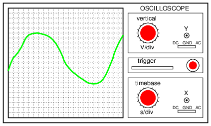
Esta es una onda "sinusoidal" moderadamente fea. ¡Contenido armónico definido aquí!
Aun así, si es necesario un análisis cuantitativo (cifras numéricas definidas), no existe sustituto para un instrumento diseñado específicamente para ese propósito. Un instrumento de este tipo se llamamedidor de calidad de energíay a veces es más conocido en los círculos electrónicos como un amplificador de baja frecuencia.analizador de espectro. Lo que hace este instrumento es proporcionar una representación gráfica en un CRT o pantalla digital del “espectro” de frecuencia del voltaje de CA. Así como un prisma divide un haz de luz blanca en sus componentes de color constituyentes (cuánto rojo, naranja, amarillo, verde y azul hay en esa luz), el analizador de espectro divide una señal de frecuencia mixta en sus frecuencias constituyentes y muestra el resultado en forma de histograma: (Figura below)
{kind=link}
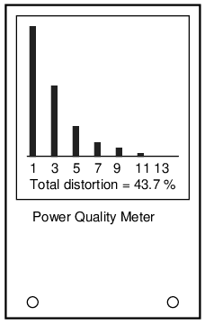
El medidor de calidad de energía es un analizador de espectro de baja frecuencia.
Cada número en la escala horizontal de este medidor representa un armónico de la frecuencia fundamental. Para los sistemas de energía estadounidenses, el "1" representa 60 Hz (el primer armónico, ofundamental), el “3” para 180 Hz (el 3er armónico), el “5” para 300 Hz (el 5to armónico), y así sucesivamente. Los rectángulos negros representan las magnitudes relativas de cada uno de estos componentes armónicos en el voltaje de CA medido. Una onda sinusoidal pura de 60 Hz mostraría solo una barra negra alta sobre el “1” sin ninguna barra negra sobre los otros marcadores de frecuencia en la escala, porque una onda sinusoidal pura no tiene contenido armónico.
Los medidores de calidad de energía como este podrían denominarse mejorarmónicomedidores, porque están diseñados para mostrar solo aquellas frecuencias que se sabe que genera el sistema de energía. En los sistemas de alimentación de CA trifásicos (predominantes para aplicaciones de gran potencia), los armónicos pares tienden a cancelarse, por lo que sólo los armónicos que existen en medida significativa son los impares.
Medidores como estos son muy útiles en manos de un técnico capacitado, porque diferentes tipos de cargas no lineales tienden a generar diferentes “firmas” de espectro que pueden indicar al solucionador de problemas el origen del problema. Estos medidores funcionan muestreando muy rápidamente el voltaje de CA en muchos puntos diferentes a lo largo de la forma de onda, digitalizando esos puntos de información y usando un microprocesador (pequeña computadora) para realizar un análisis numérico de Fourier (elTransformada rápida de Fouriero "FFT"Algoritmo) en esos puntos de datos para llegar a magnitudes de frecuencia armónica. El proceso no es muy diferente de lo que el programa SPICE le dice a una computadora que haga cuando realiza un análisis de Fourier en un voltaje de circuito simulado o una forma de onda de corriente.
AC bridge circuits
Como vimos con los circuitos de medición de CC, la configuración del circuito conocida comopuentePuede ser una forma muy útil de medir valores desconocidos de resistencia. Esto también se aplica a la CA, y podemos aplicar el mismo principio a la medición precisa de impedancias desconocidas.
Para resumir, el circuito puente funciona como un par de divisores de voltaje de dos componentes conectados a través de la misma fuente de voltaje, con undetector nulomovimiento del medidor conectado entre ellos para indicar una condición de “equilibrio” a cero voltios: (Figura below)
{kind=link}
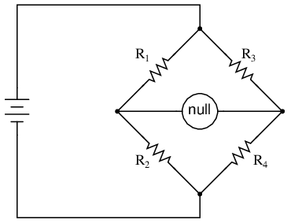
Un puente equilibrado muestra una lectura "nula" o mínima en el indicador.
Cualquiera de las cuatro resistencias en el puente anterior puede ser una resistencia de valor desconocido, y su valor puede determinarse mediante una proporción de las otras tres, que están "calibradas" o cuyas resistencias se conocen con precisión. Cuando el puente está en condición equilibrada (voltaje cero como lo indica el detector nulo), la relación resulta ser la siguiente:
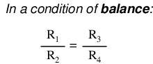
Una de las ventajas de utilizar un circuito puente para medir la resistencia es que el voltaje de la fuente de alimentación es irrelevante. En la práctica, cuanto mayor sea la tensión de alimentación, más fácil será detectar una condición de desequilibrio entre las cuatro resistencias con el detector nulo y, por tanto, más sensible será. Una mayor tensión de alimentación conlleva la posibilidad de una mayor precisión de medición. Sin embargo, no se introducirá ningún error fundamental como resultado de un voltaje de suministro de energía mayor o menor, a diferencia de otros tipos de esquemas de medición de resistencia.
Los puentes de impedancia funcionan igual, solo que la ecuación de equilibrio es concomplejocantidades, ya que tanto la magnitud como la fase entre los componentes de los dos divisores deben ser iguales para que el detector nulo indique "cero". El detector nulo, por supuesto, debe ser un dispositivo capaz de detectar voltajes de CA muy pequeños. A menudo se utiliza un osciloscopio para esto, aunque se pueden usar movimientos electromecánicos muy sensibles del medidor e incluso auriculares (pequeños parlantes) si la frecuencia de la fuente está dentro del rango de audio.
Una forma de maximizar la eficacia de los auriculares de audio como detector nulo es conectarlos a la fuente de señal a través de un transformador de adaptación de impedancia. Los parlantes de los auriculares suelen ser unidades de baja impedancia (8 Ω), que requieren una corriente sustancial para funcionar, por lo que un transformador reductor ayuda a "hacer coincidir" las señales de baja corriente con la impedancia de los parlantes de los auriculares. Un transformador de salida de audio funciona bien para este propósito: (Figura below)
{kind=link}
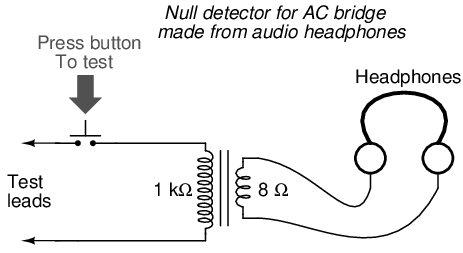
Los auriculares "modernos" de bajo ohmio requieren un transformador de adaptación de impedancia para usarlos como detector nulo sensible.
Utilizando un par de auriculares que rodean completamente los oídos (del tipo “copa cerrada”), he podido detectar corrientes de menos de 0,1 µA con este sencillo circuito detector. Se obtuvo un rendimiento aproximadamente igual utilizando dos transformadores reductores diferentes: un pequeño transformador de potencia (relación de 120/6 voltios) y un transformador de salida de audio (relación de impedancia de 1000:8 ohmios). Con el interruptor de botón colocado para interrumpir la corriente, este circuito se puede utilizar para detectar señales desde CC hasta más de 2 MHz: incluso si la frecuencia está muy por encima o por debajo del rango de audio, se escuchará un "clic" en los auriculares cada vez que se presiona y suelta el interruptor.
Conectado a un puente resistivo, todo el circuito se parece a la Figura below.
{kind=link}
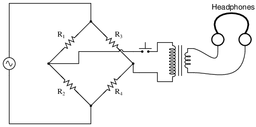
Puente con detector de nulo AC sensible.
Al escuchar los auriculares mientras se ajusta uno o más de los “brazos” de resistencia del puente, se obtendrá una condición de equilibrio cuando los auriculares no produzcan “clics” (o tonos, si la frecuencia de la fuente de alimentación del puente está dentro del rango de audio) cuando se acciona el interruptor.
Al describir puentes de CA generales, dondeimpedanciasY no sólo las resistencias deben estar en la proporción adecuada para el equilibrio, a veces es útil dibujar las respectivas patas del puente en forma de componentes en forma de caja, cada uno con una determinada impedancia: (Figura below)
{kind=link}
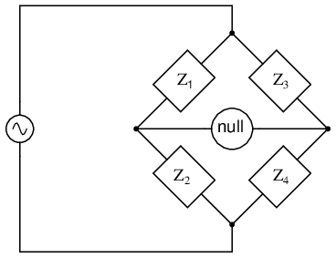
Puente de impedancia CA generalizada: Z = impedancia compleja no específica.
Para que esta forma general de puente de CA se equilibre, las relaciones de impedancia de cada rama deben ser iguales:
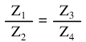
Nuevamente, se debe enfatizar que las cantidades de impedancia en la ecuación anteriordebeser complejo y tener en cuenta tanto la magnitud como el ángulo de fase. No es suficiente que las magnitudes de impedancia por sí solas estén equilibradas; Sin ángulos de fase también equilibrados, todavía habrá voltaje en los terminales del detector nulo y el puente no estará equilibrado.
Se pueden construir circuitos puente para medir casi cualquier valor deseado del dispositivo, ya sea capacitancia, inductancia, resistencia o incluso "Q". Como siempre en los circuitos de medición de puentes, la cantidad desconocida siempre se “equilibra” con un estándar conocido, obtenido a partir de un componente calibrado de alta calidad cuyo valor se puede ajustar hasta que el dispositivo detector nulo indique una condición de equilibrio. Dependiendo de cómo esté configurado el puente, el valor del componente desconocido puede determinarse directamente a partir de la configuración del estándar calibrado o derivarse de ese estándar mediante una fórmula matemática.
A continuación se muestran un par de circuitos puente simples, uno para inductancia (Figura below) y uno para capacitancia: (Figura below)
{kind=link}
{kind=link}
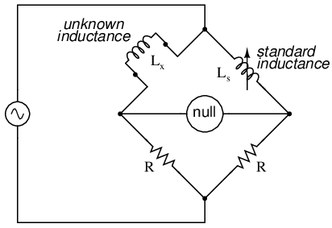
El puente simétrico mide un inductor desconocido en comparación con un inductor estándar.
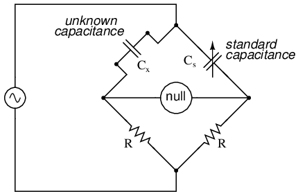
El puente simétrico mide un condensador desconocido en comparación con un condensador estándar.
Los puentes “simétricos” simples como estos se llaman así porque exhiben simetría (similitud de imagen en espejo) de izquierda a derecha. Los dos circuitos puente que se muestran arriba se equilibran ajustando el componente reactivo calibrado (Lso Cs). Están un poco simplificados con respecto a sus homólogos de la vida real, ya que los circuitos de puente simétricos prácticos a menudo tienen una resistencia variable calibrada en serie o en paralelo con el componente reactivo para equilibrar la resistencia parásita en el componente desconocido. Pero, en el mundo hipotético de los componentes perfectos, estos sencillos circuitos puente sirven para ilustrar el concepto básico.
Un ejemplo de un poco de complejidad adicional agregada para compensar los efectos del mundo real se puede encontrar en el llamadopuente de viena, que utiliza una impedancia estándar de condensador-resistencia en paralelo para equilibrar una combinación de condensador-resistencia en serie desconocida. (Cifra below) Todos los condensadores tienen cierta cantidad de resistencia interna, ya sea literal o equivalente (en forma de pérdidas de calentamiento dieléctrico), que tienden a estropear su naturaleza perfectamente reactiva. Esta resistencia interna puede ser interesante de medir, por lo que el puente de Viena intenta hacerlo proporcionando una impedancia de equilibrio que tampoco es "pura":
{kind=link}
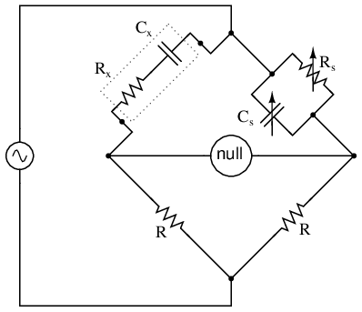
Wein Bridge mide tanto C capacitivoxy resistivo Rxcomponentes del condensador "real".
Dado que hay dos componentes estándar que ajustar (una resistencia y un condensador), este puente tardará un poco más en equilibrarse que los demás que hemos visto hasta ahora. El efecto combinado de Rsy Cses alterar la magnitud y el ángulo de fase hasta que el puente alcance una condición de equilibrio. Una vez que se logra ese equilibrio, los ajustes de Rsy Csse puede leer en sus perillas calibradas, la impedancia paralela de los dos se determina matemáticamente y la capacitancia y resistencia desconocidas se determinan matemáticamente a partir de la ecuación de equilibrio (Z1/Z2 = Z3/Z4).
En el funcionamiento del puente de Viena se supone que el condensador estándar tiene una resistencia interna insignificante, o al menos esa resistencia ya se conoce para poder incluirla en la ecuación de equilibrio. Los puentes de Viena son útiles para determinar los valores de diseños de condensadores "con pérdidas", como los electrolíticos, donde la resistencia interna es relativamente alta. También se utilizan como frecuencímetro, porque el equilibrio del puente depende de la frecuencia. Cuando se usan de esta manera, los capacitores se hacen fijos (y generalmente de igual valor) y las dos resistencias superiores se hacen variables y se ajustan mediante la misma perilla.
Una variación interesante de este tema se encuentra en el siguiente circuito puente, utilizado para medir con precisión inductancias.
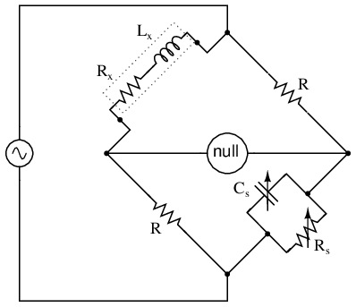
El puente Maxwell-Wein mide un inductor en términos de un estándar de condensador.
Este ingenioso circuito puente se conoce como elPuente Maxwell-Wien(a veces conocido simplemente como elpuente maxwell), y se utiliza para medir inductancias desconocidas en términos de resistencia y capacitancia calibradas. (Cifra above) Los inductores de grado de calibración son más difíciles de fabricar que los condensadores de precisión similar, por lo que el uso de un puente de inductancia "simétrico" simple no siempre es práctico. Debido a que los cambios de fase de inductores y condensadores son exactamente opuestos entre sí, una impedancia capacitiva puede equilibrar una impedancia inductiva si están ubicados en patas opuestas de un puente, como están aquí.
{kind=link}
Otra ventaja de utilizar un puente Maxwell para medir la inductancia en lugar de un puente de inductancia simétrico es la eliminación del error de medición debido a la inductancia mutua entre dos inductores. Los campos magnéticos pueden ser difíciles de proteger, e incluso una pequeña cantidad de acoplamiento entre bobinas en un puente puede introducir errores sustanciales en ciertas condiciones. Sin un segundo inductor con el que reaccionar en el puente Maxwell, este problema se elimina.
Para un funcionamiento más sencillo, el condensador estándar (Cs) y la resistencia en paralelo con él (Rs) se hacen variables y ambos deben ajustarse para lograr el equilibrio. Sin embargo, se puede hacer que el puente funcione si el capacitor es fijo (no variable) y más de una resistencia se hace variable (al menos la resistencia en paralelo con el capacitor y una de las otras dos). Sin embargo, en la última configuración se necesitan más ajustes de prueba y error para lograr el equilibrio, ya que las diferentes resistencias variables interactúan para equilibrar la magnitud y la fase.
A diferencia del puente de Viena simple, el equilibrio del puente Maxwell-Wien es independiente de la frecuencia de la fuente y, en algunos casos, se puede hacer que este puente se equilibre en presencia de frecuencias mixtas de la fuente de voltaje de CA, siendo el factor limitante la estabilidad del inductor en un amplio rango de frecuencia.
Hay más variaciones además de estos diseños, pero no se justifica aquí una discusión completa. Se fabrican circuitos de puente de impedancia de uso general que se pueden conmutar en más de una configuración para una máxima flexibilidad de uso.
Un problema potencial en los circuitos puente de CA sensibles es el de la capacitancia parásita entre cualquiera de los extremos de la unidad detectora nula y el potencial de tierra. Debido a que las capacitancias pueden "conducir" corriente alterna mediante carga y descarga, forman rutas de corriente parásita hacia la fuente de voltaje de CA que pueden afectar el equilibrio del puente: (Figura below)
{kind=link}
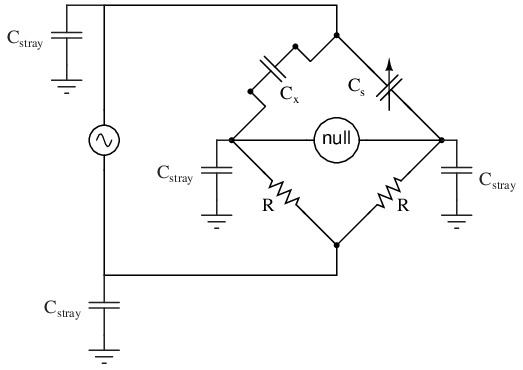
La capacitancia parásita a tierra puede introducir errores en el puente.
Si bien los medidores de láminas son imprecisos, su principio operativo no lo es. En lugar de resonancia mecánica, podemos sustituir la resonancia eléctrica y diseñar un frecuencímetro utilizando un inductor y un condensador en forma de circuito tanque (inductor y condensador en paralelo). Uno o ambos componentes se hacen ajustables y se coloca un medidor en el circuito para indicar la amplitud máxima de voltaje entre los dos componentes. Las perillas de ajuste están calibradas para mostrar la frecuencia de resonancia para cualquier configuración determinada, y la frecuencia se lee en ellas después de que el dispositivo se ha ajustado para obtener la máxima indicación en el medidor. Esencialmente, se trata de un circuito de filtro sintonizable que se ajusta y luego se lee de manera similar a un circuito puente (que debe equilibrarse para una condición "nula" y luego leerse). El problema empeora si la fuente de voltaje de CA está firmemente conectada a tierra en un extremo, la impedancia parásita total para las corrientes de fuga es mucho menor y, como resultado, cualquier corriente de fuga a través de estas capacitancias parásitas aumenta: (Figura below)
{kind=link}
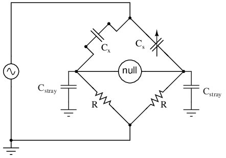
Los errores de capacitancia parásita son más graves si un lado del suministro de CA está conectado a tierra.
Una forma de reducir en gran medida este efecto es mantener el detector nulo en el potencial de tierra, de modo que no haya voltaje de CA entre él y tierra y, por lo tanto, no habrá corriente a través de capacitancias parásitas. Sin embargo, conectar directamente el detector nulo a tierra no es una opción, ya que crearía unadirectoruta actual para corrientes parásitas, que sería peor que cualquier ruta capacitiva. En cambio, se utiliza un circuito divisor de voltaje especial llamadoterreno wagneriano or tierra wagnerianase puede utilizar para mantener el detector nulo en el potencial de tierra sin la necesidad de una conexión directa al detector nulo. (Cifra below)
{kind=link}
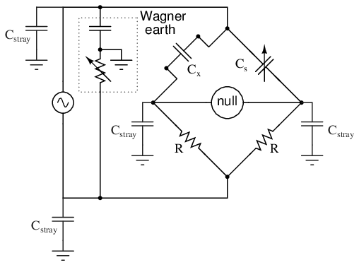
La tierra Wagner para suministro de CA minimiza los efectos de la capacitancia parásita a tierra en el puente.
El circuito de tierra de Wagner no es más que un divisor de voltaje, diseñado para tener la relación de voltaje y el cambio de fase en cada lado del puente. Debido a que el punto medio del divisor Wagner está directamente conectado a tierra, cualquier otro circuito divisor (incluido cualquier lado del puente) que tenga las mismas proporciones de voltaje y fases que el divisor Wagner, y alimentado por la misma fuente de voltaje CA, también estará en potencial de tierra. Por lo tanto, el divisor de tierra de Wagner obliga al detector nulo a estar en potencial de tierra, sin una conexión directa entre el detector y tierra.
A menudo se hace una provisión en la conexión del detector nulo para confirmar la configuración adecuada del circuito divisor de tierra Wagner: un interruptor de dos posiciones (Figura below) de modo que un extremo del detector nulo pueda conectarse al puente o a la tierra Wagner. Cuando el detector nulo registra una señal cero en ambas posiciones del interruptor, no solo se garantiza que el puente esté equilibrado, sino que también se garantiza que el detector nulo esté en potencial cero con respecto a tierra, eliminando así cualquier error debido a corrientes de fuga a través de capacitancias parásitas del detector a tierra:
{kind=link}
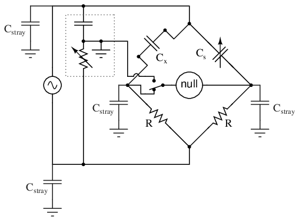
La posición de conmutación permite el ajuste del suelo Wagner.
- REVISAR:
- Los circuitos puente de CA funcionan según el mismo principio básico que los circuitos puente de CC: que una relación equilibrada de impedancias (en lugar de resistencias) dará como resultado una condición "equilibrada" como lo indica el dispositivo detector de nulos.
- Los detectores nulos para puentes de CA pueden ser movimientos sensibles de medidores electromecánicos, osciloscopios (CRT), auriculares (amplificados o no amplificados) o cualquier otro dispositivo capaz de registrar niveles de voltaje de CA muy pequeños. Al igual que los detectores nulos de CC, su único punto requerido de precisión de calibración es cero.
- Los circuitos de puente de CA pueden ser del tipo "simétrico", donde una impedancia desconocida se equilibra con una impedancia estándar de tipo similar en el mismo lado (superior o inferior) del puente. O pueden ser "no simétricos", utilizando impedancias paralelas para equilibrar las impedancias en serie, o incluso capacitancias para equilibrar las inductancias.
- Los circuitos puente de CA a menudo tienen más de un ajuste, ya que ambas magnitudes de impedanciaandEl ángulo de fase debe coincidir adecuadamente para equilibrarse.
- Algunos circuitos de puente de impedancia son sensibles a la frecuencia mientras que otros no. Los tipos sensibles a la frecuencia se pueden utilizar como dispositivos de medición de frecuencia si se conocen con precisión todos los valores de los componentes.
- A tierra wagneriana or terreno wagnerianoes un circuito divisor de voltaje agregado a los puentes de CA para ayudar a reducir los errores debidos a la capacitancia parásita que acopla el detector nulo a tierra.
AC instrumentation transducers
Así como se han fabricado dispositivos para medir determinadas cantidades físicas y repetir esa información en forma de señales eléctricas de CC (termopares, galgas extensométricas, sondas de pH, etc.), se han fabricado dispositivos especiales que hacen lo mismo con la CA.
A menudo es necesario poder detectar y transmitir la posición física de piezas mecánicas mediante señales eléctricas. Esto es especialmente cierto en los campos del control automatizado de máquinas herramienta y la robótica. Una manera sencilla y fácil de hacer esto es con un potenciómetro: (Figura below)
{kind=link}
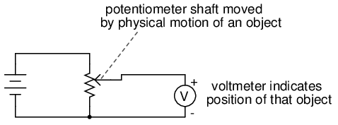
El voltaje de la toma del potenciómetro indica la posición de un objeto esclavo del eje.
Sin embargo, los potenciómetros tienen sus propios problemas. Por un lado, dependen del contacto físico entre el “limpiaparabrisas” y la tira de resistencia, lo que significa que sufren los efectos del desgaste físico con el tiempo. A medida que los potenciómetros se desgastan, su salida proporcional en función de la posición del eje se vuelve cada vez menos segura. Es posible que ya hayas experimentado este efecto al ajustar el control de volumen de una radio antigua: al girar la perilla, es posible que escuches sonidos de "rasguños" que salen de los parlantes. Esos ruidos son el resultado de un mal contacto del limpiador en el potenciómetro de control de volumen.
Además, este contacto físico entre el limpiaparabrisas y la tira crea la posibilidad de que se produzcan arcos (chispas) entre los dos a medida que se mueve el limpiaparabrisas. En la mayoría de los circuitos de potenciómetros, la corriente es tan baja que el arco eléctrico es insignificante, pero es una posibilidad a considerar. Si el potenciómetro se va a utilizar en un entorno donde hay vapor o polvo combustible, este potencial de formación de arco se traduce en un potencial de explosión.
Utilizando CA en lugar de CC, podemos evitar por completo el contacto deslizante entre piezas si utilizamos untransformador variableen lugar de un potenciómetro. Los dispositivos fabricados para este propósito se denominan LVDT, que significaLinearVariableDdiferencialTtransformadores. El diseño de un LVDT se ve así: (Figura below)
{kind=link}
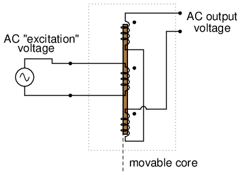
La salida de CA del transformador diferencial variable lineal (LVDT) indica la posición del núcleo.
Obviamente, este dispositivo es untransformador: tiene un único devanado primario alimentado por una fuente externa de voltaje de CA y dos devanados secundarios conectados en serie. Esvariableporque el núcleo puede moverse libremente entre los devanados. Esdiferencialdebido a la forma en que están conectados los dos devanados secundarios. Estar dispuestos a oponerse entre sí (180ofuera de fase) significa que la salida de este dispositivo será ladiferenciaentre la salida de voltaje de los dos devanados secundarios. Cuando el núcleo está centrado y ambos devanados generan el mismo voltaje, el resultado neto en los terminales de salida será cero voltios. se llamalinealporque la libertad de movimiento del núcleo es rectilínea.
La salida de voltaje CA de un LVDT indica la posición del núcleo móvil. Cero voltios significa que el núcleo está centrado. Cuanto más lejos esté el núcleo de la posición central, mayor porcentaje de voltaje de entrada (“excitación”) se verá en la salida. La fase del voltaje de salida en relación con el voltaje de excitación indica en qué dirección desde el centro está desplazado el núcleo.
La principal ventaja de un LVDT sobre un potenciómetro para detección de posición es la ausencia de contacto físico entre las partes móviles y estacionarias. El núcleo no entra en contacto con los devanados del alambre, sino que se desliza hacia adentro y hacia afuera dentro de un tubo no conductor. Así, el LVDT no se “desgasta” como un potenciómetro, ni existe la posibilidad de crear un arco.
La excitación del LVDT suele ser de 10 voltios RMS o menos, en frecuencias que van desde la línea eléctrica hasta el rango de audio alto (20 kHz). Una posible desventaja del LVDT es su tiempo de respuesta, que depende principalmente de la frecuencia de la fuente de voltaje de CA. Si se desean tiempos de respuesta muy rápidos, la frecuencia debe ser más alta para permitir que cualquier circuito sensor de voltaje tenga suficientes ciclos de CA para determinar el nivel de voltaje a medida que se mueve el núcleo. Para ilustrar el problema potencial aquí, imagine este escenario exagerado: un LVDT alimentado por una fuente de voltaje de 60 Hz, con el núcleo entrando y saliendo cientos de veces por segundo. ¡La salida de este LVDT ni siquiera parecería una onda sinusoidal porque el núcleo se movería a lo largo de su rango de movimiento antes de que el voltaje de la fuente de CA pudiera completar un solo ciclo! Sería casi imposible determinar la posición instantánea del núcleo si se mueve más rápido que el voltaje de la fuente instantánea.
Una variación del LVDT es el RVDT, oRotarioVariableDdiferencialTrescatador. Este dispositivo funciona casi con el mismo principio, excepto que el núcleo gira sobre un eje en lugar de moverse en línea recta. Los RVDT se pueden construir para un movimiento limitado de 360omovimiento (círculo completo).
Siguiendo con este principio, tenemos lo que se conoce comosincro or selsyn, que es un dispositivo construido de manera muy parecida a un motor o generador de CA polifásico de rotor bobinado. El rotor es libre de girar 360 grados.o, como un motor. En el rotor hay un devanado único conectado a una fuente de voltaje de CA, muy parecido al devanado primario de un LVDT. Los devanados del estator suelen tener forma de Y trifásica, aunque se han construido sincros con más de tres fases. (Cifra below) Un dispositivo con un estator bifásico se conoce comosolucionador. Un resolutor produce salidas de seno y coseno que indican la posición del eje.
{kind=link}
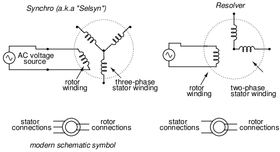
Un sincronizador se enrolla con un devanado de estator trifásico y un campo giratorio. Un resolver tiene un estator de dos fases.
Los voltajes inducidos en los devanados del estator por la excitación de CA del rotor sonnotdesfasado en 120ocomo en un generador trifásico real. Si el rotor se energizara con corriente continua en lugar de corriente alterna y el eje girara continuamente, entonces los voltajes serían verdaderamente trifásicos. Pero no es así como está diseñado para funcionar un sincronizador. Más bien, esto es undetección de posiciónDispositivo muy parecido a un RVDT, excepto que su señal de salida es mucho más definida. Con el rotor energizado por CA, los voltajes del devanado del estator serán proporcionales en magnitud a la posición angular del rotor, fase 0oo 180odesplazado, como un LVDT o RVDT normal. Se podría considerar como un transformador con un devanado primario y tres devanados secundarios, cada uno de los cuales está orientado en un ángulo único. A medida que el rotor gira lentamente, cada devanado se alineará directamente con el rotor, produciendo voltaje total, mientras que los otros devanados producirán algo menos que el voltaje total.
Los sincronizadores se utilizan a menudo en pares. Con sus rotores conectados en paralelo y energizados por la misma fuente de voltaje de CA, sus ejes coincidirán en posición con un alto grado de precisión: (Figura below)
{kind=link}
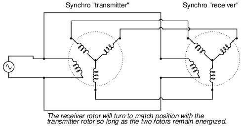
Los ejes sincronizados están esclavos entre sí. Al girar uno se mueve el otro.
Estos pares “transmisor/receptor” se han utilizado en barcos para transmitir la posición del timón o para transmitir la posición del giroscopio de navegación a lo largo de distancias bastante largas. La única diferencia entre el "transmisor" y el "receptor" es cuál de ellos es accionado por una fuerza externa. El "receptor" se puede utilizar con la misma facilidad que el "transmisor" obligando a su eje a girar y dejando que el sincronizador de la izquierda coincida en la posición.
Si el rotor del receptor se deja sin alimentación, actuará como un detector de error de posición, generando un voltaje de CA en el rotor si el eje está a menos de 90°.oo 270odesplazado de la posición del eje del transmisor. El rotor del receptor ya no generará ningún par y, en consecuencia, ya no coincidirá automáticamente con la posición del transmisor: (Figura below)
{kind=link}
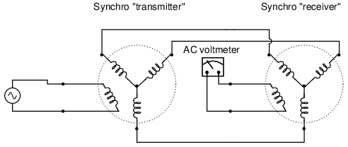
El voltímetro de CA registra el voltaje si el rotor del receptor no gira exactamente 90 o 270 grados con respecto al rotor del transmisor.
Esto puede considerarse casi como una especie de circuito puente que logra el equilibrio sólo si el eje del receptor se lleva a una de dos posiciones (coincidentes) con el eje del transmisor.
Una aplicación bastante ingeniosa del sincronizador es la creación de un dispositivo de cambio de fase, siempre que el estator esté energizado por CA trifásica: (Figura below)
{kind=link}
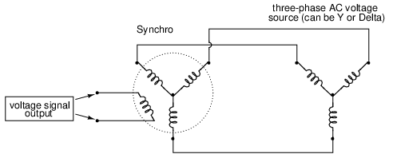
La rotación completa del rotor cambiará suavemente la fase de 0otodo el camino a 360o(volver a 0o).
A medida que se gira el rotor del sincronizador, la bobina del rotor se alineará progresivamente con cada bobina del estator, siendo sus respectivos campos magnéticos de 120odesfasados unos de otros. Entre esas posiciones, estos campos desfasados se mezclarán para producir un voltaje del rotor en algún lugar entre 0o, 120o, o 240ocambio. El resultado práctico es un dispositivo capaz de proporcionar un voltaje CA de fase infinitamente variable con solo girar una perilla (unida al eje del rotor).
Un sincronizador o un resolutor pueden medir el movimiento lineal si están equipados con un mecanismo de piñón y cremallera. Un movimiento lineal de unas pocas pulgadas (o cm) que resulta en múltiples revoluciones del sincronizador (resolvedor) genera un tren de ondas sinusoidales. UnInductosyn® es una versión lineal del resolutor. Emite señales como un resolutor; sin embargo, tiene un ligero parecido.
El Inductosyn consta de dos partes: un devanado serpentino fijo con un paso de 2 mm o 0,1 pulgadas y un devanado móvil conocido comocontrol deslizante. (Cifra below) El control deslizante tiene un par de devanados que tienen el mismo paso que el devanado fijo. Los devanados del control deslizante están desplazados en un cuarto de paso, por lo que el movimiento produce ondas sinusoidales y coseno. Un devanado deslizante es adecuado para contar pulsos, pero no proporciona información de dirección. Los devanados bifásicos proporcionan información de dirección en la fase de las ondas senoidales y cosenoidales. El movimiento de un tono produce un ciclo de ondas seno y coseno; múltiples lanzamientos producen un tren de olas.
{kind=link}
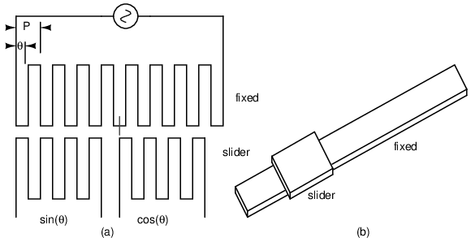
Inductosyn: (a) Devanado serpentino fijo, (b) Devanado bifásico deslizante móvil. Adaptado de la Figura 6.16[WAK]
Cuando decimos que las ondas seno y coseno se producen en función del movimiento lineal, en realidad queremos decir que una portadora de alta frecuencia se modula en amplitud a medida que se mueve el control deslizante. Las señales de CA de los dos controles deslizantes deben medirse para determinar la posición dentro de un tono, la posición fina. ¿Cuántos lanzamientos se ha movido el control deslizante? La relación de las señales de seno y coseno no revela eso. Sin embargo, el número de lanzamientos (número de olas) se puede contar desde un punto de partida conocido, lo que produce una posición aproximada. Este es uncodificador incremental. Si se debe conocer la posición absoluta independientemente del punto de partida, un resolver auxiliar adaptado para una revolución por longitud proporciona una posición aproximada. Esto constituye uncodificador absoluto.
Un Inductosyn lineal tiene una relación de transformación de 100:1. Compare esto con la proporción 1:1 de un solucionador. Una excitación de unos pocos voltios de CA en un Inductosyn produce unos pocos milivoltios. Este bajo nivel de señal se convierte a un formato digital de 12 bits mediante unconvertidor de resolución a digital (RDC). Se puede lograr una resolución de 25 micropulgadas.
También hay una versión rotativa del Inductosyn que tiene 360 pasos de patrón por revolución. Cuando se utiliza con un convertidor de resolución a digital de 12 bits, se puede lograr una resolución superior a 1 segundo de arco. Este es un codificador incremental. Es necesario contar los lanzamientos desde un punto de partida conocido para determinar la posición absoluta. Alternativamente, un resolutor puede determinar la posición absoluta aproximada.[WAK]
Hasta ahora, todos los transductores analizados han sido del tipo inductivo. Sin embargo, es posible fabricar transductores que también funcionen con capacitancia variable, utilizándose CA para detectar el cambio en la capacitancia y generar un voltaje de salida variable.
Recuerde que la capacitancia entre dos superficies conductoras varía con tres factores principales: el área de superposición de esas dos superficies, la distancia entre ellas y la constante dieléctrica del material entre las superficies. Si dos de tres de estas variables pueden fijarse (estabilizarse) y permitirse que la tercera varíe, entonces cualquier medición de capacitancia entre las superficies será únicamente indicativa de los cambios en esa tercera variable.
Los investigadores médicos han utilizado durante mucho tiempo la detección capacitiva para detectar cambios fisiológicos en los cuerpos vivos. Ya en 1907, un investigador alemán llamado H. Cremer colocó dos placas de metal a cada lado de un corazón de rana que latía y midió los cambios de capacitancia resultantes del llenado y vaciado de sangre del corazón alternativamente. Se han realizado mediciones similares en seres humanos con placas de metal colocadas en el pecho y la espalda, registrando la acción respiratoria y cardíaca mediante cambios de capacitancia. Para mediciones capacitivas más precisas de la actividad de los órganos, se han insertado sondas metálicas en los órganos (especialmente el corazón) en las puntas de los tubos de catéter, midiendo la capacitancia entre la sonda metálica y el cuerpo del sujeto. Con una frecuencia de excitación de CA suficientemente alta y un detector de voltaje lo suficientemente sensible, no solo la acción de bombeo sino también lasonidosdel corazón activo puede interpretarse fácilmente.
Al igual que los transductores inductivos, los transductores capacitivos también se pueden fabricar para que sean unidades autónomas, a diferencia de los ejemplos fisiológicos directos descritos anteriormente. Algunos transductores funcionan haciendo que una de las placas del condensador sea móvil, ya sea de tal manera que varíe el área de superposición o la distancia entre las placas. Otros transductores funcionan moviendo un material dieléctrico hacia adentro y hacia afuera entre dos placas fijas: (Figura below)
{kind=link}
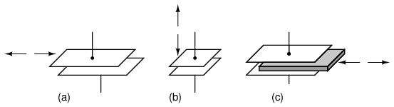
El transductor capacitivo variable varía; (a) área de superposición, (b) distancia entre placas, (c) cantidad de dieléctrico entre placas.
Se pueden obtener transductores con mayor sensibilidad e inmunidad a cambios en otras variables mediante un diseño diferencial, muy parecido al concepto detrás del LVDT (Linear VariableDiferencialTransformador). A continuación se muestran algunos ejemplos de transductores capacitivos diferenciales: (Figura below)
{kind=link}
El transductor capacitivo diferencial varía la relación de capacitancia cambiando: (a) área de superposición, (b) distancia entre placas, (c) dieléctrico entre placas.
Como puede ver, todos los dispositivos diferenciales que se muestran en la ilustración anterior tienentresconexiones de cables en lugar de dos: un cable para cada una de las placas “externas” y otro para la placa “común”. A medida que cambia la capacitancia entre una de las placas "extremales" y la placa "común", la capacitancia entre la otra placa "extremal" y la placa "común" cambia en la dirección opuesta. Este tipo de transductor se presta muy bien para su implementación en un circuito puente: (Figura below)
{kind=link}
Circuito de medida de puente transductor capacitivo diferencial.
Los transductores capacitivos proporcionan capacitancias relativamente pequeñas para que funcione un circuito de medición, generalmente en elpicorango de faradios. Debido a esto, generalmente se requieren altas frecuencias de suministro de energía (¡en el rango de megahercios!) para reducir estas reactancias capacitivas a niveles razonables. Dadas las pequeñas capacitancias proporcionadas por los transductores capacitivos típicos, las capacitancias parásitas tienen el potencial de ser fuentes importantes de errores de medición. Un buen blindaje del conductor esbásicopara un circuito de transductor capacitivo confiable y preciso.
El circuito puente no es la única forma de interpretar eficazmente la salida de capacitancia diferencial de dicho transductor, pero es una de las más sencillas de implementar y comprender. Al igual que con el LVDT, la salida de voltaje del puente es proporcional al desplazamiento de la acción del transductor desde su posición central, y la dirección del desplazamiento estará indicada por el cambio de fase. Este tipo de circuito puente tiene una función similar al tipo que se usa con las galgas extensométricas: no está diseñado para estar en una condición "equilibrada" todo el tiempo, sino que el grado de desequilibrio representa la magnitud de la cantidad que se está midiendo.
Una alternativa interesante al circuito puente para interpretar la capacitancia diferencial es elgemelo-T. Requiere el uso de diodos, esas “válvulas unidireccionales” para la corriente eléctrica mencionadas anteriormente en el capítulo: (Figura below)
{kind=link}
Circuito de medida con transductor capacitivo diferencial “Twin-T”.
Este circuito podría entenderse mejor si se volviera a dibujar para que se pareciera más a una configuración de puente: (Figura below)
{kind=link}
Circuito de medición “Twin-T” del transductor de condensador diferencial rediseñado como un puente. La salida está a través de Rcarga.
Condensador C1es cargado por la fuente de voltaje de CA durante cada medio ciclo positivo (positivo medido en referencia al punto de tierra), mientras que C2se carga durante cada medio ciclo negativo. Mientras se carga un capacitor, el otro capacitor se descarga (a un ritmo más lento del que estaba cargado) a través de la red de tres resistencias. Como consecuencia, C.1mantiene un voltaje CC positivo con respecto a tierra, y C2un voltaje CC negativo con respecto a tierra.
Si el transductor capacitivo se desplaza de la posición central, la capacitancia de un capacitor aumentará mientras que la del otro disminuirá. Esto tiene poco efecto sobre la carga de voltaje pico de cada capacitor, ya que hay una resistencia insignificante en la ruta de la corriente de carga desde la fuente al capacitor, lo que resulta en una constante de tiempo muy corta (τ). Sin embargo, cuando llega el momento de descargar a través de las resistencias, el capacitor con el valor de capacitancia mayor mantendrá su carga por más tiempo, lo que resultará en un voltaje de CC promedio mayor con el tiempo que el capacitor de menor valor.
La resistencia de carga (Rcarga), conectado en un extremo al punto entre las dos resistencias de igual valor (R) y en el otro extremo a tierra, no caerá voltaje de CC si las cargas de voltaje de CC de los dos capacitores son iguales en magnitud. Si, por otro lado, un capacitor mantiene una carga de voltaje CC mayor que el otro debido a una diferencia en capacitancia, la resistencia de carga caerá un voltaje proporcional a la diferencia entre estos voltajes. Por lo tanto, la capacitancia diferencial se traduce en un voltaje de CC a través de la resistencia de carga.
A través de la resistencia de carga, hay voltaje CA y CC, y solo el voltaje CC es significativo para la diferencia de capacitancia. Si se desea, se puede agregar un filtro de paso bajo a la salida de este circuito para bloquear la CA, dejando solo una señal de CC para ser interpretada por el circuito de medición: (Figura below)
{kind=link}
La adición de un filtro de paso bajo al “twin-T” alimenta CC pura al indicador de medición.
Como circuito de medición para sensores capacitivos diferenciales, la configuración Twin-T disfruta de muchas ventajas sobre la configuración de puente estándar. En primer lugar, el desplazamiento del transductor se indica mediante un simple voltaje de CC, no un voltaje de CA cuya magnitudandLa fase debe interpretarse para determinar cuál capacitancia es mayor. Además, dados los valores de los componentes y la salida de la fuente de alimentación adecuados, esta señal de salida de CC puede ser lo suficientemente fuerte como para impulsar directamente el movimiento de un medidor electromecánico, eliminando la necesidad de un circuito amplificador. Otra ventaja importante es que todos los elementos importantes del circuito tienen un terminal conectado directamente a tierra: la fuente, la resistencia de carga y ambos condensadores tienen referencia a tierra. Esto ayuda a minimizar los efectos nocivos de la capacitancia parásita que comúnmente afecta a los circuitos de medición de puentes, y también elimina la necesidad de medidas compensatorias como la tierra de Wagner.
También es fácil especificar piezas para este circuito. Normalmente, un circuito de medición que incorpora diodos complementarios requiere la selección de diodos "adaptados" para una buena precisión. ¡No es así con este circuito! Mientras el voltaje de la fuente de alimentación sea significativamente mayor que la desviación en la caída de voltaje entre los dos diodos, los efectos del desajuste son mínimos y contribuyen poco al error de medición. Además, las variaciones de la frecuencia de suministro tienen un impacto relativamente bajo en la ganancia (cuánto voltaje de salida se desarrolla para una determinada cantidad de desplazamiento del transductor), y el voltaje de suministro de onda cuadrada funciona tan bien como la onda sinusoidal, asumiendo un ciclo de trabajo del 50 % (medios ciclos positivos y negativos iguales), por supuesto.
La experiencia personal con el uso de este circuito ha confirmado su impresionante rendimiento. No sólo es fácil de crear prototipos y probar, sino que su relativa insensibilidad a la capacitancia parásita y su alto voltaje de salida en comparación con los circuitos puente tradicionales lo convierten en una alternativa muy sólida.
Contributors
Los contribuyentes a este capítulo se enumeran en orden cronológico de sus contribuciones, desde el más reciente hasta el primero. Consulte el Apéndice 2 (Lista de colaboradores) para fechas e información de contacto.
Jason Stark(Junio de 2000): Formato de documentos HTML, que dio lugar a una segunda edición mucho más atractiva.
Bibliography
- [WAK]Walt Kester, “Position and Motion Sensors”, Analog Devices. https://www.analog.com/media/en/training-seminars/design-handbooks/Practical-Design-Techniques-Sensor-Signal/Section6.PDF
Lecciones en circuitos eléctricoscopyright (C) 2000-2023 Tony R. Kuphaldt, según los términos y condiciones delCC BY License.